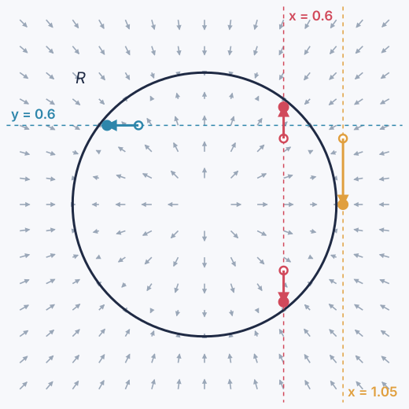

Train once on a joint space $Z$. Each query decides which coordinates are inputs and which are outputs. One model answers every conditional.
mathstruct.org/Lenticulum.jl (theory vault + API)
github.com/MathStruct/Lenticulum.jl
DOI 10.5281/zenodo.23314723
Julia · research prototype · LuxCore-only
1Function vs. relation
$$R_\theta=\{\,z\in Z:\ r_\theta(z)=0\,\}$$
Network: fit $f_\theta$, run forward only.
Lenticulum: fit a residual $r_\theta$; its zero set is the model.
Inputs and outputs are chosen at query time.
2One model, three queries

query
clamp
answer
x = 0.6
x
y ≈ ±0.74: two branches; the start picks one
y = 0.6
y
x on the circle: same model, reversed
x = 1.05
x
off the circle: still an answer, the ridge point
Arrows: score $\nabla\log p_\sigma$ of a circle smoothed at $\sigma=0.3$ (illustration; roots move to ±0.8 as $\sigma\to0$). Drawn by poster/circle_field.py.
Lagrangian $\ell(z)+\langle\lambda,r_F\rangle$: state eq. → adjoint eq. → gradient.
Gradients for parameters, inputs and precisions.
Noise nodes fixed: no noise stored. Checked against finite differences.
6The analogy: polynomials vs. varieties
explicit
implicit
model
$f_\theta:X\to Y$
$R_\theta\subseteq Z$ (variety)
inference
evaluate
root finding
backprop
reverse-mode AD
implicit function thm.
universality
Weierstraß
Nash–Tognoli
loss
$\lVert f_\theta(x)-y\rVert^2$
$\lVert r_\theta(z)\rVert^2$
answers
exactly one
many, or none → closest
cost
cheap
a solve
wiring
DAG
any graph
7Where residuals come from
Diffusion
residual from a trained denoiser: $g_\theta=\sum_k w_k\lambda_{t_k}(\varepsilon_\theta(\cdot)-\varepsilon_k)$.
Exact score ⇒ $g=\nabla\Phi$: RED-Diff's stop-gradient field is a gradient. Inference = proximal step. Zero noise ⇒ DEQ of Tweedie's denoiser.
Equilibrium
DEQ: the layer's fixed point is a relation, shipped as a function. Neural ODE: an invertible factor.